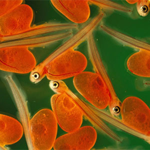
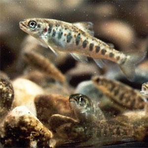

As spawning time nears, steelhead adults enter tributaries of the main river they have ascended, or swim to the upper reaches of the mainstream. Those entering tributaries tend to swim farther up than chinook or coho salmon in order to find cool spawning areas with smaller-sized gravel. Once the fry emerge from the gravel, they survive and thrive in cool streams that have: “ 1) good streamside vegetative cover to keep the water cool and provide plenty of leaf litter for growing the insects that steelhead eat and 2) lots of wood and boulders in the stream to create riffle-pool complexes with plenty of places to hide and rest.” (Fitzpatrick 1999) In those tribs where the waters tend to recede and warm with the advance of summer, the young steelhead drop into the main river. As spawning time nears the female steelhead selects a section of appropriate graveled stream bottom where she excavates a nest, a depression, by turning on her side and swishing her tail vigorously. A typical nest is one to two feet across, and several inches to a foot deep. No more than a quarter of the hen’s eggs are deposited in the nest. As the eggs are expelled from the female, the buck releases sperm in a milky matrix which washes through the eggs, hopefully fertilizing all. Once her male suitor has fertilized the crop, Ms. Steelhead moves upstream of the eggs and excavates another nest. In a model of natural efficiency, as the hen creates the second nest she is covering the first. The Dance continues as more nests are created, the eggs are laid and fertilized, and the female steelhead is finally emptied of her precious cargo. The collection of these four, five, or six nests is referred to as a redd.
There is a species survival advantage for not depositing all the eggs in a single nest. If any of the eggs go unfertilized, a fungus can invade that egg, then, eventually, spread to destroy the entire nest. Because they are physically isolated one from the other, the fungus from an infected nest will usually not be able to spread to the next.
Having deposited her entire egg supply, the spent female, now known as a kelt, is finished. She will eventually resume feeding, rebuilding her strength, and make a move to the ocean again. Her life’s work for this year is complete once the last nest has been covered. She will now go her own way and the mating partner, his. Unlike the Pacific salmon which die soon after spawning, a spent steelhead can survive. With a lot of luck these fish will return to this stream next year to repeat this procreative drama.
The male, like his counterpart of the human species, complicates matters for himself. He is capable of spawning with other females. Instead of being satisfied with one successful mating encounter, the male now seeks out another ripe female. Maybe he finds one; maybe he doesn’t. He may have to physically fend off more potential suitors with the same plan. In addition to the exhausting rigors of spawning, an embattled buck may be torn and wounded by other would-be boyfriends. Between the wounds and physical exhaustion, the buck may not be able to survive the return to the ocean. He may very well die in the stream of his birth. There’s a lesson here somewhere for us all, guys
The buried, fertilized eggs develop and undergo a metamorphosis over the next 2 – 3 months. Slowly, the egg starts to “morph” into a tiny fish. In several weeks the egg has a small fish head and a small fish tail with a relatively huge belly which is the shrinking egg. At this stage the developing steelhead is referred to as an alevin. Having provided the infant steelhead with nourishment up to this point, the egg will eventually be entirely absorbed. The completion time for the final absorption of the egg depends on water temperature, taking longer in colder water. Then, the luckiest, most determined little steelhead will wriggle, zig, and zag through the maze of interstitial spaces in the gravel to make it into the wide open expanse of the stream. Here, they must now seek out food items on their own to sustain themselves and grow. Most of a survivor’s siblings may not make it, buried forever, never emerging from where they were “hatched”. The tiny survivor, then, must search for food, while at the same time not becoming a meal for a larger predator. And, many more of his baby steelhead comrades who’ve made it this far will not survive their first few weeks in open water, having been eaten, starved, or swept to their deaths, unable to find shelter in raging winter river flows. For those that do make it through their first year in the river, many, again, will not see their second.
The cruel sifting of natural selection continues. It is usually in the spring at age two when most of our Pacific Northwest steelhead juveniles begin a journey downstream that will eventually lead them to the Pacific Ocean. That is, of course, if they survive future survival trials from dams, fishermen, more predators, disease, injury, and potentially lethal high water temperatures. Again, most of those that actually begin the trip toward saltwater won’t make it in typical years.
Newly emerged tiny steelhead swim freely, exploring their spacious, dangerous environment. The fry’s parents are no longer around as they have already returned to the ocean and/or died after fertilization. If their luck at surviving continues, the fry which beat the odds will stay in their home stream here in the Pacific Northwest for one or two years, attaining lengths of four to eight inches. In the spring, responding to their biological urge, on the move, the young steelhead start migrating downstream, headed for saltwater. For some in the lower portions of coastal streams, the journey is short, maybe a few miles. Those in the heart of Idaho may have to traverse many streams and rivers, journeying almost a thousand miles to reach the Pacific, where most will stay to dine for one or two years. Some rare individuals, most often from British Columbia, will remain in the marine environment for three or four years.
Initially, the tiny fry school in quiet protected portions of the stream, usually along its periphery. Here they are sheltered from strong currents and predators as they forage for food items. Their diet consists mostly of small aquatic insects, and the occasional terrestrial. In the first weeks as free-swimming roamers, the mortality rate can be very high, and largely determines the size of the surviving class of a given river for that year.
As the steelhead grow larger over the next few months, the tendency to school with its sibling disappears. Most juveniles strike out on their own for a more solitary existence. With growth, physical features and markings on their bodies become more evident. At this point they are commonly referred to as parr, characterized by large, oval-shaped markings on the fishes’ sides. For the next one to three years --- usually two --- the parr steelhead focuses on food and survival. Driven by their inherited instincts, in the spring of their second full year most steelheadsmolt, beginning their downstream journey to the ocean. The smolts, usually 4” - 8” long, just keep following and following the flowing river maze until it reaches saltwater.
Upon entering the ocean, the journey in the salt is far from over. Our little Pacific Northwest adventurers make their way hundreds, if not a thousand miles or more, out into the Pacific Ocean to spend a year or, more typically, two, in the very general vicinity of Alaska’s Aleutian Islands. Some British Columbia and Alaskan fish may spend three or four years. Those migrants of extreme southern Oregon, south of Cape Blanco, and those fish from California Rivers, stay much nearer the coast in the Pacific. All have answered some instinctual and environmental cues which take them to their marine stations. Here they feed, they grow and they frolic until their genes prompt them to return to their home stream as sexually mature adults.